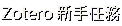
免費的文獻管理工具：收文獻、畫重點、一鍵產生 APA，再到 Word 自動插入引用
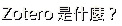
文獻、PDF、筆記都存在這裡，可以分資料夾、加標籤。
在 PubMed、期刊網站點一下，書目和 PDF 一起收進書庫。
裝好 Zotero 就自動出現，插入引用、產生參考文獻。
完全免費，Windows、Mac 都能用。三件裝備：書庫要裝、收集器要裝、引用器會自動出現。
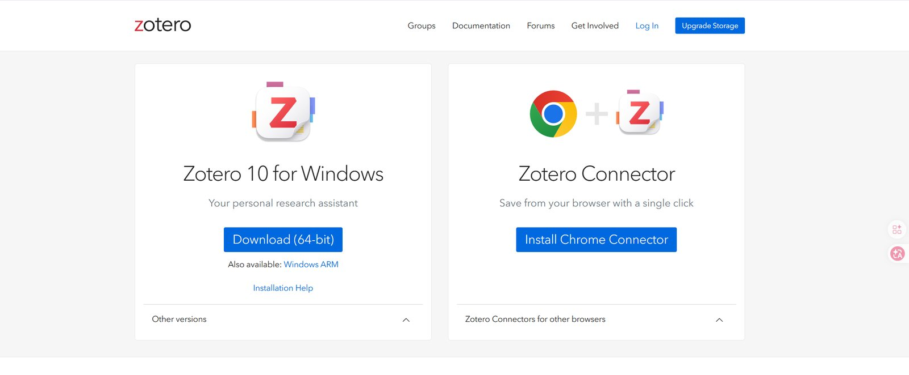
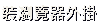
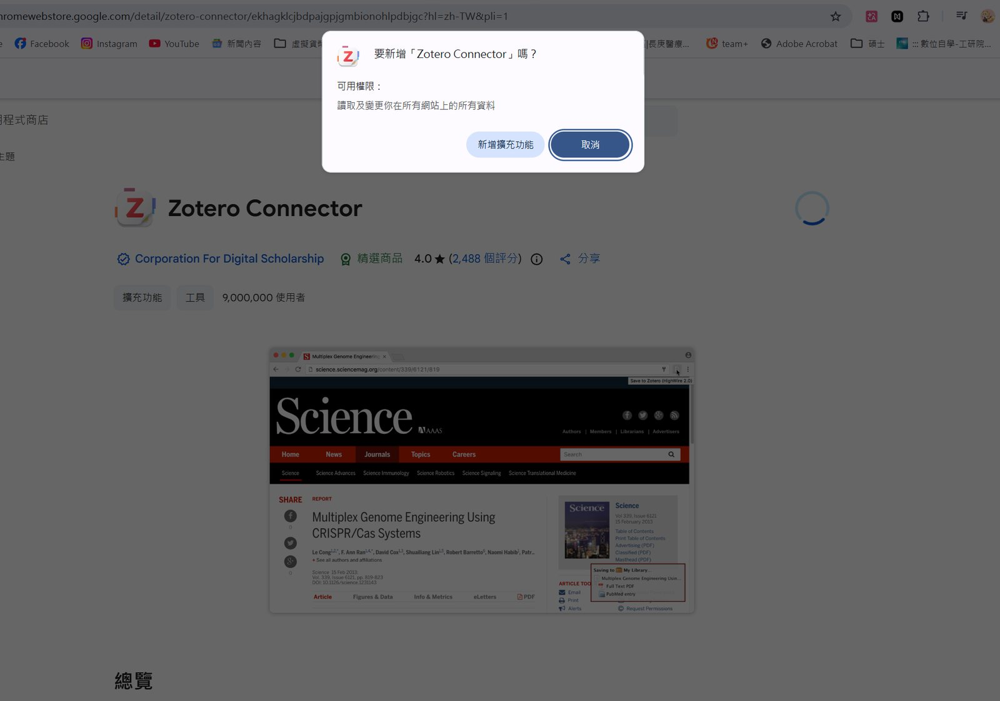
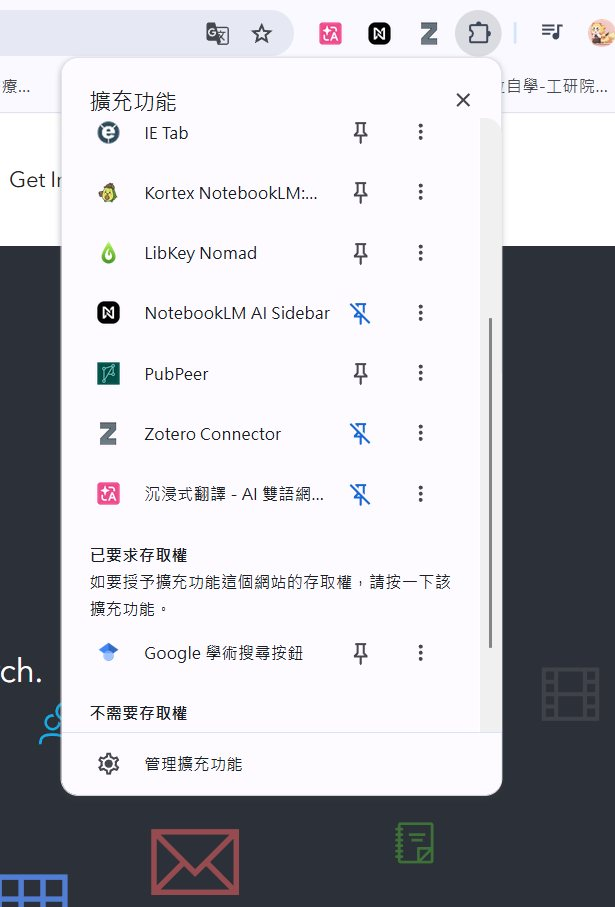
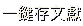
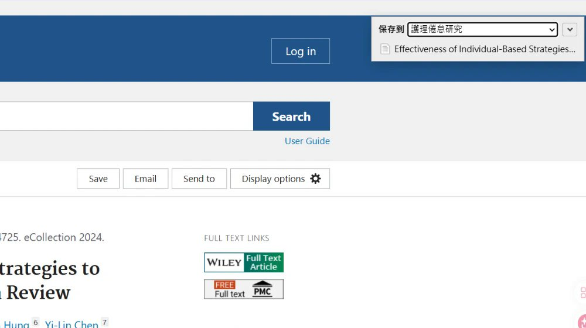
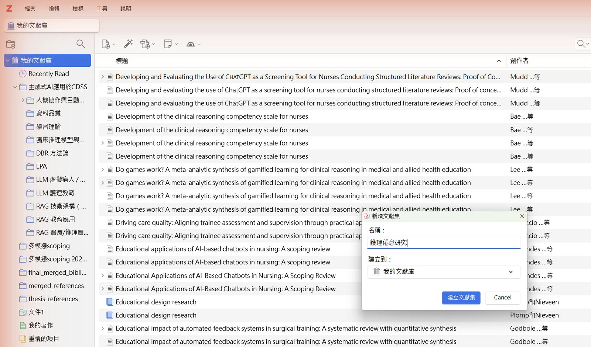
同一篇可以同時放在好幾個資料夾，不會複製成兩份。
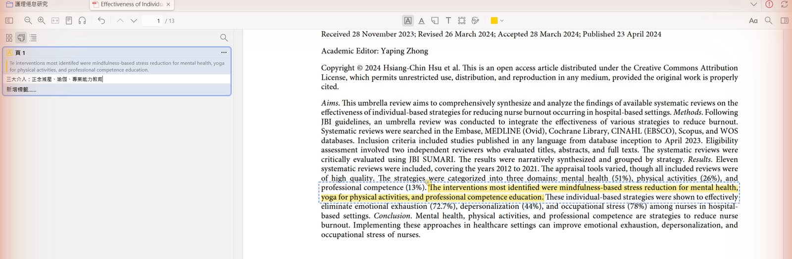
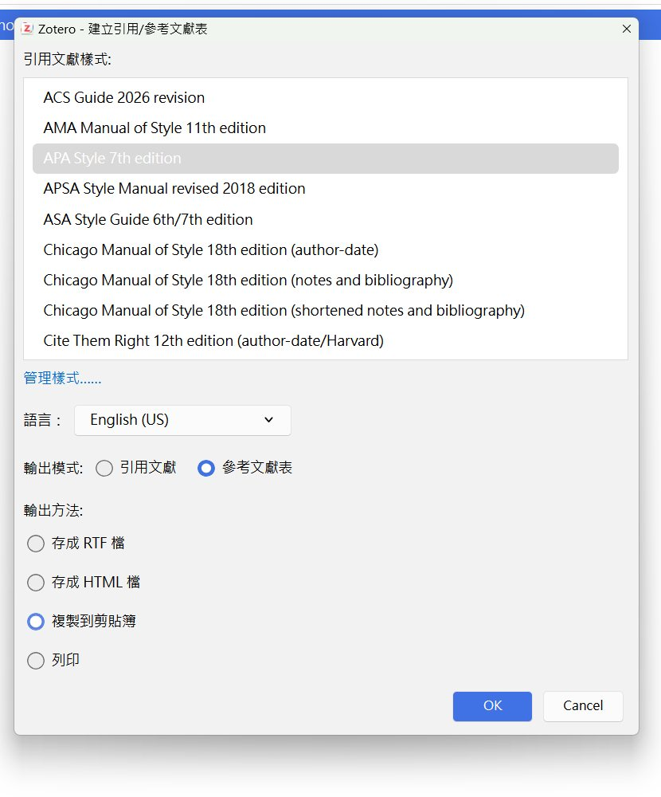
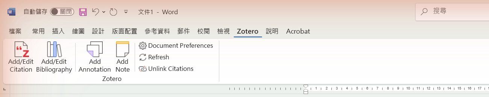
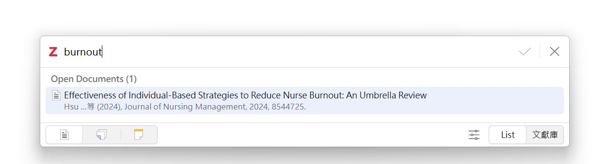
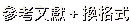
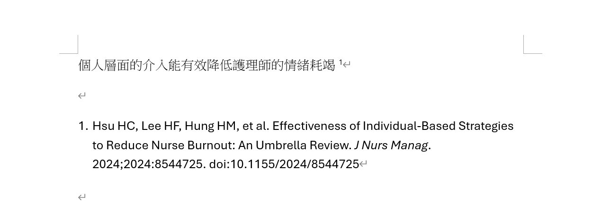
瀏覽器和 Word 外掛都是跟 Zotero 軟體溝通。
要改作者、年份或標題，回 Zotero 改，再按 Refresh。
① 裝好 Zotero 與 Chrome 外掛 ② 從 PubMed 存 3 篇到新資料夾 ③ 在 Word 插入 2 個引用＋文末參考文獻，再切換成 AMA 看看
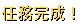
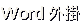
從今天起，參考文獻交給 Zotero；你的時間留給研究本身。
影片與簡報：bobyu89.github.io/phd-forward